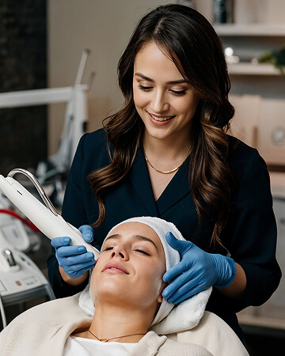

overview
Restoring fertility through stem cell and regenerative medicine
Regenerative Gynaecology & Infertility focuses on treatments and technologies that help both men and women conceive a biological child with the support of stem cell and regenerative medicine.
Our protocols combine autologous cellular therapies with advanced clinical care to address the underlying causes of reduced fertility — restoring tissue function rather than only managing symptoms.
- Autologous cellular therapy protocols
- PRP and BMAC for women and men
- Integrated regenerative & clinical care